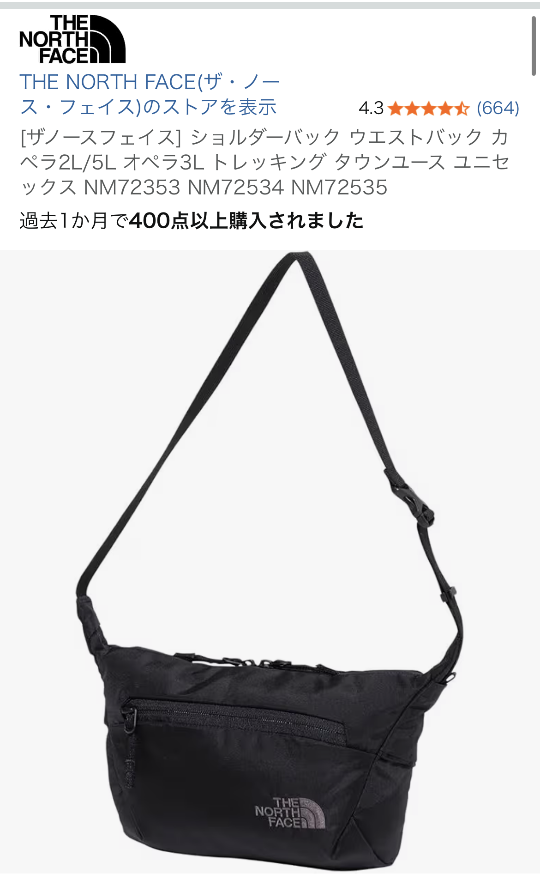

THE NORTH FACE カペラ2【2L】ショルダーバッグを口コミからレビュー｜コンパクト派に刺さるミニバッグ
投稿日：2025-03-08（レビュー日をもとに記載）

星5評価の理由：財布とスマホが「ちょうど良く」収まる2Lサイズ
今回レビューするのは、THE NORTH FACEのコンパクトショルダーバッグ「カペラ2【2L】」ブラックモデルです。 参考にした口コミでは星5つ中5つの最高評価で、「コンパクトで財布やスマホを入れるのに丁度良い」とコメントされています。 2Lクラスのミニバッグは、見た目は可愛いものの「あと少し入らない」「パンパンになってシルエットが崩れる」という不満が出やすいサイズですが、 このカペラ2は、長財布・スマホ・鍵・ハンカチ程度なら無理なく収まり、日常のちょっとした外出や旅行時のサブバッグとして非常にバランスの良い容量になっています。
特に、キャッシュレス決済が中心で荷物を最小限にしたい人にとっては、「大きすぎず、小さすぎない」絶妙なサイズ感。 ボディもスリムなので、満員電車や人混みの多いショッピングモールでも邪魔になりにくく、斜め掛けしたままでもストレスが少ないのが魅力です。
細めストラップでも安っぽく見えない理由｜バッグとのバランスが◎
口コミの中で印象的だったのが、「紐が細いのでちゃっちぃ印象と思いましたが、バッグも小さいのでバランスとれていました」という一文です。 細めのショルダーストラップは、写真だけ見ると「耐久性は大丈夫？」「安っぽく見えない？」と不安になりがちですが、 カペラ2は本体サイズがコンパクトなため、ストラップの細さがむしろデザインとして活きています。
大きなボディに細い紐だとアンバランスですが、小ぶりな2Lバッグなら、細めストラップが軽快さとミニマルな印象をプラス。 肩に食い込みにくい程度の幅は確保されているので、財布とスマホ程度の重さであれば、長時間の使用でも疲れにくいと感じる人が多いはずです。 カジュアルなTシャツスタイルから、シンプルなきれいめコーデまで合わせやすく、「ノースフェイスらしいアウトドア感を残しつつ、街使いにちょうどいい」バランスに仕上がっています。
黒刺繍ロゴ×ブラックボディで汚れに強く、コーデにも馴染みやすい
もう一つのポイントが、「黒の刺繍なので汚れにも強い」という口コミです。 一般的なノースフェイスのバッグは、白ロゴプリントがアクセントになっているモデルも多いですが、 このカペラ2はブラックボディに黒刺繍ロゴという、かなり控えめで大人っぽいデザイン。 ロゴが主張しすぎないため、スポーティーになりすぎず、落ち着いたファッションにも自然に溶け込みます。
また、黒刺繍は汚れや色移りが目立ちにくいのも実用的なメリットです。 日常使いのショルダーバッグは、ドアや壁に擦れたり、テーブルに直置きしたりと、どうしても小さな汚れが付きやすいもの。 その点、ブラック×黒刺繍の組み合わせなら、多少の汚れや経年変化も「味」として受け入れやすく、長く使えるデザインと言えます。
内ポケットが複数あって仕分けがしやすい｜小物が迷子にならない
口コミでは「バッグの中にもポケットがいくつかあり便利」とも評価されています。 ミニショルダーで意外とストレスになるのが、「中が一つの大きな空間だけで、小物が全部底に溜まる」問題です。 カペラ2は内部に複数のポケットが用意されているため、スマホ・カードケース・鍵・リップクリームなどをざっくりと仕分けて収納できます。
特に、鍵や交通系ICカードのように「すぐ取り出したいけれど、落としたくない」ものを内ポケットに入れておけるのは大きな安心感。 レジ前や改札前でゴソゴソ探す時間が減り、日常のちょっとしたストレスが軽減されます。 2Lという小さめ容量ながら、内部の整理がしやすい構造になっているのは、さすがアウトドアブランドのノースフェイスといった印象です。
こんな人におすすめ｜「手ぶら以上、リュック未満」のちょうど良さを求める人へ
以上の口コミ内容と一般的なミニショルダーバッグの使い方を踏まえると、THE NORTH FACE カペラ2【2L】は次のような人に特におすすめできます。
- 財布とスマホ、最低限の小物だけをスマートに持ち歩きたい人
- ロゴが主張しすぎない、落ち着いたノースフェイスのバッグを探している人
- 黒ベースで汚れが目立ちにくく、長く使えるデザインを重視する人
- 内ポケット付きで、鍵やカードを整理して持ち歩きたい人
- リュックほど大げさではない「手ぶら以上」の身軽さが欲しい人
実際の口コミでも星5評価が付いており、「コンパクトで良い」「紐が細いと思ったが、バッグのサイズとバランスが取れている」といった声から、 見た目と実用性のバランスが高いレベルで両立していることが伝わってきます。 ノースフェイスのバッグの中でも、あえてロゴを控えめにしたい人や、ミニマルなコーデが好きな人には特に刺さるモデルと言えるでしょう。
まとめ｜ノースフェイスらしい信頼感と、日常使いしやすいミニマルデザイン
THE NORTH FACE カペラ2【2L】ショルダーバッグ（ブラック）は、 「コンパクトで財布やスマホを入れるのに丁度良い」「黒の刺繍なので汚れにも強い」「バッグの中にもポケットがいくつかあり便利」 といった口コミどおり、日常使いにちょうど良いサイズ感と実用性を備えたミニバッグです。
荷物を減らして身軽に動きたい日や、旅行時のサブバッグ、フェスやアウトドアで貴重品だけを持ち歩きたいシーンなど、 1つ持っておくと出番が多いタイプのショルダーバッグだと感じました。 ノースフェイスの信頼感あるブランドロゴをさりげなく身につけつつ、コーデを邪魔しないミニマルなデザインを求める人には、かなり有力な選択肢になるはずです。
気になった方は、口コミ評価やカラー展開もチェックしつつ、自分のスタイルに合うかどうかをイメージしてみてください。